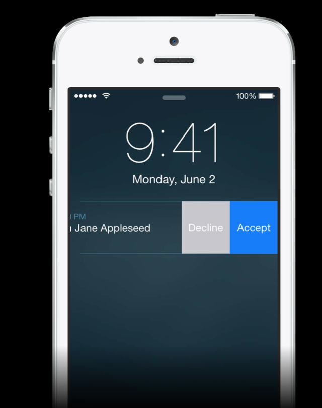
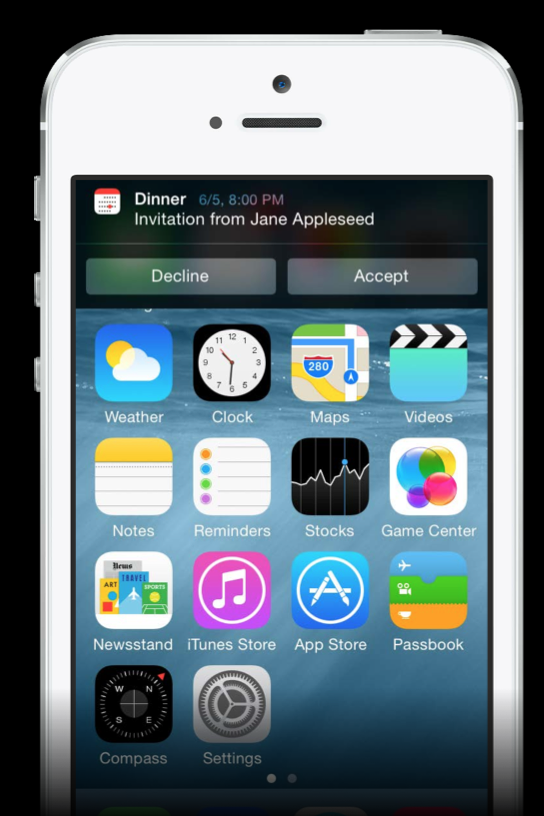
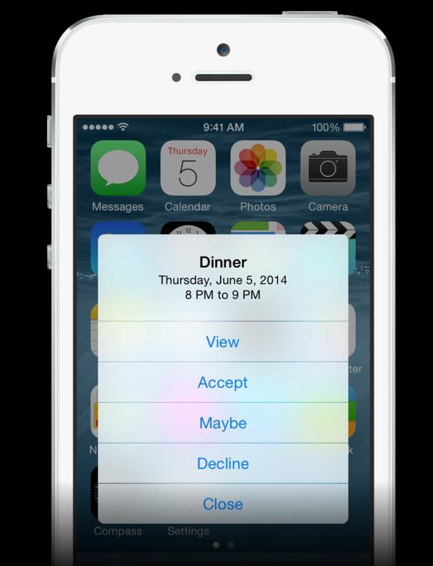

WWDC 2014のVideo Sessionを見てみる。 https://developer.apple.com/videos/wwdc/2014/
今回紹介するのは大きく以下の4つ
UIRemoteNotificationTypeと同じようなイメージ
categoryという概念が追加されているが後ほど
UIUserNotificationType types = UIUserNotificationTypeBadge |
UIUserNotificationTypeSound | UIUserNotificationTypeAlert;
UIUserNotificationSettings *mySettings = [UIUserNotificationSettings
settingsForTypes:types categories:nil];
[[UIApplication sharedApplication] registerUserNotificationSettings:mySettings];
UIApplicationDelegateにCallbackメソッドがある
許可しない場合は、allowedTypes == UIUserNotificationTypeNoneとなる
- (void)application:(UIApplication *)application
didRegisterUserNotificationSettings:
(UIUserNotificationSettings *)notificationSettings {
// user has allowed receiving user notifications of the following types
UIUserNotificationType allowedTypes = [notificationSettings types];
}
- (void)getReadyForNotification {
// ...
// check to make sure we still need to show notification
UIUserNotificationSettings *currentSettings = [[UIApplication
sharedApplication] currentUserNotificationSettings];
[self checkSettings:currentSettings];
}
iOS7ではそれぞれのNotificationに対して、スワイプで削除、タップで起動しかできなかった
iOS8ではスワイプして、複数のボタンを準備してアクションさせる事が可能
  
ボタンのタイトルやバックグランド、ロック解除前でも可能かどうかを定義する
UIMutableUserNotificationAction *acceptAction =
[[UIMutableUserNotificationAction alloc] init];
acceptAction.identifier = @"ACCEPT_IDENTIFIER";
acceptAction.title = @"Accept";
// Given seconds, not minutes, to run in the background
// UIUserNotificationActivationModeForegroundを指定すると、選択時にアプリを起動する
acceptAction.activationMode = UIUserNotificationActivationModeBackground;
acceptAction.destructive = NO;
// If YES requires passcode, but does not unlock the device
acceptAction.authenticationRequired = NO;
複数のアクションを登録したカテゴリを作成する
例えば： - メールカテゴリだと、返信アクション、アーカイブアクションなど登録 - 友達申請用のカテゴリだと、承認アクション、保留アクションなど登録
UIMutableUserNotificationCategory *inviteCategory =
[[UIMutableUserNotificationCategory alloc] init];
inviteCategory.identifier = @"INVITE_CATEGORY";
[inviteCategory setActions:@[acceptAction, maybeAction, declineAction]
forContext:UIUserNotificationActionContextDefault];
UIUserNotificationActionContextDefault ボタンのサイズが普通 UIUserNotificationActionContextMinimal ボタンのサイズが若干小さめ
UIApplicationにActionを登録したCategoryを設定したSettingを登録する
NSSet *categories = [NSSet setWithObjects:inviteCategory, alarmCategory, ...
UIUserNotificationSettings *settings =
[UIUserNotificationSettings settingsForTypes:types categories:categories];
[[UIApplication sharedApplication]
registerUserNotificationSettings:settings];
apsにcategoryを追加して飛ばす
{
"aps" : {
"alert" : "You’re invited!",
"category" : "INVITE_CATEGORY",
}
}
UILocalNotification *notification = [[UILocalNotification alloc] init];
...
notification.category = @"INVITE_CATEGORY";
[[UIApplication sharedApplication] scheduleLocalNotification:notification];
iOS7ではアプリが起動して無い場合
application:didFinishLaunchingWithOptions:
application:didReceiveRemoteNotification:fetchCompletionHandler:
アプリが起動している場合は
application:didReceiveLocalNotification:
application:didReceiveRemoteNotification:
application:didReceiveRemoteNotification:fetchCompletionHandler:
iOS8では
// Push Notificationの場合
- (void)application:(UIApplication *)application
handleActionWithIdentifier:(NSString *)identifier
forRemoteNotification:(NSDictionary *)notification
completionHandler:(void (^)())completionHandler {
if ([identifier isEqualToString:@"ACCEPT_IDENTIFIER"]) {
[self handleAcceptActionWithNotification:notification];
}
// Must be called when finished
completionHandler();
}
// Local Notificationの場合
- (void)application:(UIApplication *)application
handleActionWithIdentifier:(NSString *)identifier
forLocalNotification:(UILocalNotification *)notification
completionHandler:(void(^)())completionHandler {
}
を使う。identifireにActionで選択されたIDが入ってくる。
User
Silent
×[myApp registerForRemoteNotificationTypes:someTypes]; [myApp registerForRemoteNotifications]; [myApp registerUserNotificationSettings:mySettings];
一定エリアに入ったタイミング、出るタイミング
一定エリアに入ったら毎回通知するか、一回だけ通知するか選択可能
以前もあったけどシンプルに実装できるようになったイメージ
UILocalNotification * locNotification;
locNotification.regionTriggersOnce = YES;
locNotification.region = [[CLCircularRegion alloc] initWithCenter:LOC_COORDINATE
[[UIApplication sharedApplication] scheduleLocalNotification:localNotification];